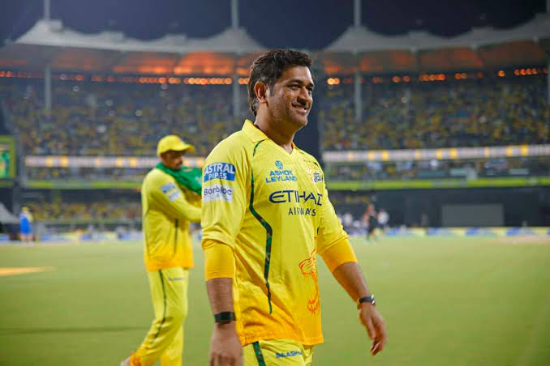

CRICKETER PROFILE

MS DHONI
ABOUT CAREER
Mahendra Singh Dhoni, popularly known as MS Dhoni, is one of the greatest cricketers in the history of India. Born on July 7, 1981, in Ranchi, Jharkhand, he is famous for his calm leadership, excellent wicketkeeping, and powerful batting. Dhoni made his international debut in 2004 and soon became one of India's most reliable players. Under his captaincy, India won the ICC T20 World Cup (2007), the ICC Cricket World Cup (2011), and the ICC Champions Trophy (2013), making him the only captain to win all three major ICC white-ball trophies. He is also one of the most successful captains in the history of the Indian Premier League, leading the Chennai Super Kings to multiple IPL titles. Known as "Captain Cool," Dhoni is admired for his ability to stay calm under pressure and make smart decisions during crucial moments. Even after retiring from international cricket in 2020, he remains an inspiration to millions of fans for his leadership, humility, and dedication to the game.
| T20 BEST SCORE |
ODI BEST SCORE |
TEST BEST SCORE |
| 56 |
183* |
224 |
ODI
- MS Dhoni made his ODI debut for India on 23 December 2004 against Bangladesh.
- He played 350 ODI matches and scored 10,773 runs with an impressive average of 50.57.
- As India's ODI captain, he led the team to victory in the 2011 ICC Cricket World Cup and the 2013 ICC Champions Trophy.
- Dhoni is regarded as one of the greatest finishers and wicketkeeper-batsmen in ODI cricket, with 10 centuries, 73 half-centuries, and over 400 dismissals as a wicketkeeper.
TEST
- MS Dhoni made his Test debut on 2 December 2005 against Sri Lanka.
- He played 90 Test matches and scored 4,876 runs at an average of 38.09, including 6 centuries and 33 half-centuries.
- Dhoni captained India in 60 Test matches, winning 27, making him one of India's most successful Test captains.
- MS Dhoni retired from Test cricket in December 2014, leaving a lasting legacy as an outstanding wicketkeeper, batsman, and leader.
T20
- MS Dhoni made his T20 International debut on 1 December 2006 against South Africa.
- He played 98 T20I matches and scored 1,617 runs at an average of 37.60.
- Dhoni led India to victory in the 2007 ICC T20 World Cup, becoming the first Indian captain to win the tournament.
- He is regarded as one of the greatest T20 captains and wicketkeepers, known for his calm leadership, quick stumpings, and excellent finishing abilities.
MS DHONI AS CAPTAIN
- MS Dhoni captained the Indian cricket team from 2007 to 2017 in limited-overs cricket and from 2008 to 2014 in Test cricket.
- Under his leadership, India won the 2007 ICC T20 World Cup, 2011 ICC Cricket World Cup, and 2013 ICC Champions Trophy.
- Dhoni is the only captain in cricket history to win all three major ICC white-ball trophies.
- Known as "Captain Cool," Dhoni was famous for his calm decision-making, tactical brilliance, and ability to handle pressure in crucial matches.
- ACHIVEMENTS
- a) Won 3 Major ICC Trophies: MS Dhoni is the only captain to win the ICC T20 World Cup (2007), ICC Cricket World Cup (2011), and ICC Champions Trophy (2013).
- b) Successful IPL Captain: He has led the Chennai Super Kings (CSK) to five IPL titles, making them one of the most successful teams in IPL history.
- c) National Honors: Dhoni has received India's highest sporting awards, including the Rajiv Gandhi Khel Ratna (Major Dhyan Chand Khel Ratna), Padma Shri, and Padma Bhushan.
- d) Cricket Legend: He is widely regarded as one of the greatest wicketkeeper-batsmen, finishers, and captains in the history of world cricket.